AHL 3.9 — Geometric transformations in two dimensions（行列による平面上の変換）
- 点を列ベクトルで書き、\(2 \times 2\) の transformation matrix（変換行列）を左から掛けて image（像）を求められる。
- 公式集の \(6\) つの transformation matrix（reflection（対称移動）、horizontal / vertical stretch（伸長）、enlargement（拡大）、rotation（回転）\(2\) 種類）を、正しく選んで使える。
- translation（平行移動）だけは transformation matrix の外に足す、という形 \(A\mathbf{x} + \mathbf{t}\) が書ける。
- 図形の頂点をまとめて \(1\) つの行列にして、一度に変換できる。
- \(2\) つの変換の composition（合成）を求められる。順番で答えが変わると分かる。
- transformation matrix の determinant が「面積が何倍になるか」だと分かり、像の面積を求められる。
- inverse matrix を使って、像からもとの点にもどせる。
- 同じ変換をくり返して fractal（フラクタル）を作る仕組みを説明できる。
この項目で使う道具は、AHL 1.14 で出そろっています。
- 行列と縦ベクトルのかけ算（AHL 1.14 第3節）
- determinant（AHL 1.14 第6節）
- inverse matrix（同じ節）
新しいのは、その計算が図の上で何をしているのかという見方だけです。
この項目の rotation と reflection は、角を度で書きます。 試験開始直後の設定は、この項目では Degree のままにしておいてください。
ctrl + menu → Settings → Document Settings → Angle: DegreeRadian のままだと、\(\cos 90^\circ\) が \(-0.448\ldots\) のような値になり、行列そのものが変わってしまいます。
The idea
この項目は、点を動かす仕組みを行列で書く項目です。
transformation matrix（変換行列）を、平面上の点を別の位置へ動かすルールとして使います。そして、図形のすべての点に同じ transformation matrix を使えば、\(1\) つの行列で図形全体の変換を表せます。
もとの図形を object（もとの図形）、動かしたあとを image（像）と呼びます。
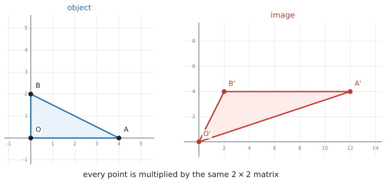
図 1 では、三角形の \(3\) つの頂点をそれぞれ縦に並べた形で書き、そのどれにも同じ transformation matrix を左から掛けています。各頂点に同じ変換を行うことで、その結果として図形全体が変換される——これがこの項目の中身です。
1. 点は列ベクトルで表し、transformation matrix を左から掛けます
いつもは点を \((3,\ 1)\) と横に書きますが、この項目では縦に書きます。
\[ (x,\ y) \quad \longrightarrow \quad \begin{pmatrix} x \\ y \end{pmatrix} \]
この、数を縦に並べた形を column vector（列ベクトル）といいます。AHL 1.14 で column matrix と呼んだものと同じで、列が \(1\) つだけの行列です。点 \((3,\ 1)\) なら、次のようになります。
\[ \begin{pmatrix} 3 \\ 1 \end{pmatrix} \]
縦に書くのは、\(2 \times 2\) の transformation matrix を左から掛けるためです。AHL 1.14 で見たとおり、行列の積があるのは内側の数がそろっているときだけでした。
\[ (2 \times \underline{2})(\underline{2} \times 1) \ \Rightarrow \ 2 \times 1 \]
\(2 \times 2\) と \(2 \times 1\) なら内側がそろうので計算でき、答えはまた \(2 \times 1\)、つまり点を表す列ベクトルになります。
そこで、このページでずっと使う形は次のとおりです。
\[ M \begin{pmatrix} x \\ y \end{pmatrix} \]
- \(M\) … transformation matrix（変換行列）。\(2 \times 2\) です
- \(\begin{pmatrix} x \\ y \end{pmatrix}\) … object 側の点
- 計算した結果 … その点の image の座標
では、実際に \(1\) つの点を変換してみます。
たとえば \(90^\circ\) の anticlockwise rotation（反時計回りの回転）なら、公式集にある
\[ \begin{pmatrix} \cos\theta & -\sin\theta \\ \sin\theta & \cos\theta \end{pmatrix} \]
に \(\theta = 90^\circ\) を入れて
\[ \begin{pmatrix} \cos 90^\circ & -\sin 90^\circ \\ \sin 90^\circ & \cos 90^\circ \end{pmatrix} = \begin{pmatrix} 0 & -1 \\ 1 & 0 \end{pmatrix} \]
となり、点 \((3,\ 1)\) の image は
\[ \begin{pmatrix} 0 & -1 \\ 1 & 0 \end{pmatrix}\begin{pmatrix} 3 \\ 1 \end{pmatrix} = \begin{pmatrix} 0(3) + (-1)(1) \\ 1(3) + 0(1) \end{pmatrix} = \begin{pmatrix} -1 \\ 3 \end{pmatrix} \]
です。答えを書くときは \((-1,\ 3)\) と横にもどして構いません。 計算のあいだだけ縦にする、と思ってください。
正しいのは、transformation matrix が左、列ベクトルが右のこの形です。
\[ M \begin{pmatrix} x \\ y \end{pmatrix} \]
逆にした \(\begin{pmatrix} x \\ y \end{pmatrix} M\) とは書けません。\((2 \times 1)(2 \times 2)\) では、内側の数（\(1\) と \(2\)）がそろわないので、行列の積そのものが存在しないからです（AHL 1.14）。
2. 図形は、頂点を並べて一度に動かします
三角形の \(3\) 頂点を \(1\) つずつ計算してもよいのですが、\(1\) 点を \(1\) 列として、横に並べて \(1\) つの行列にすると、transformation matrix を掛けるのが \(1\) 回で終わります。
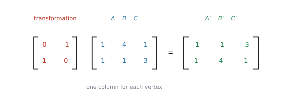
図 2 では、\(A(1,1)\)、\(B(4,1)\)、\(C(1,3)\) をそれぞれ \(1\) 列にして、\(3\) 列ぶん横に並べ、\(2 \times 3\) の行列にしています。\(2 \times 2\) に \(2 \times 3\) を掛けるので、内側の \(2\) がそろっていて計算できます。答えも \(2 \times 3\) で、列がそのまま \(A'\)、\(B'\)、\(C'\) になります。
\(\begin{pmatrix} e \\ f \end{pmatrix}\) は \(2 \times 1\) なので、\(2 \times 3\) の答えにそのままは足せません。
頂点が \(3\) つあるなら、\(\begin{pmatrix} e \\ f \end{pmatrix}\) を \(3\) 列ぶん並べたものを足すか、\(1\) 点ずつ計算してください。試験では、点の数が少ないので \(1\) 点ずつのほうが安全です。translation については第4節で扱います。
はじめに見た 図 1 も、この形です
ページの最初の 図 1 が、どの点をどこへ動かしていたのかを、いま並べて書けます。使っている transformation matrix は、次のものです。
\[ M = \begin{pmatrix} 3 & 1 \\ 1 & 2 \end{pmatrix} \]
object の \(3\) 頂点は \(O(0,\ 0)\)、\(A(4,\ 0)\)、\(B(0,\ 2)\) です。\(1\) 点を \(1\) 列にして、\(3\) 列ぶん横に並べます。
\[ \begin{pmatrix} 3 & 1 \\ 1 & 2 \end{pmatrix} \begin{pmatrix} 0 & 4 & 0 \\ 0 & 0 & 2 \end{pmatrix} = \begin{pmatrix} 0 & 12 & 2 \\ 0 & 4 & 4 \end{pmatrix} \]
答えの列を、左から順に読みます。
| object の点 | 計算 | image の点 |
|---|---|---|
| \(O(0,\ 0)\) | \(\begin{pmatrix} 3(0) + 1(0) \\ 1(0) + 2(0) \end{pmatrix} = \begin{pmatrix} 0 \\ 0 \end{pmatrix}\) | \(O'(0,\ 0)\) |
| \(A(4,\ 0)\) | \(\begin{pmatrix} 3(4) + 1(0) \\ 1(4) + 2(0) \end{pmatrix} = \begin{pmatrix} 12 \\ 4 \end{pmatrix}\) | \(A'(12,\ 4)\) |
| \(B(0,\ 2)\) | \(\begin{pmatrix} 3(0) + 1(2) \\ 1(0) + 2(2) \end{pmatrix} = \begin{pmatrix} 2 \\ 4 \end{pmatrix}\) | \(B'(2,\ 4)\) |
図 1 の右の図と見くらべてください。\(O'\)、\(A'\)、\(B'\) の位置が、この表の右の列と合っています。
\(O(0,\ 0)\) の image が \(O(0,\ 0)\) のままなのは、どんな transformation matrix を掛けても、\(0\) ばかりの列は \(0\) のままだからです。
だから、transformation matrix だけで表せる変換は、必ず原点を動かさないものになります。次の節で見る公式集の \(6\) つが、どれも「原点を中心に」「原点を通る直線で」と書かれているのは、このためです。原点が動く変換を書きたいときは、第4節の translation が要ります。
3. 公式集の \(6\) つを、図で見分けます
公式集の AHL 3.9 の欄は、Transformation matrices という見出しで、\(6\) つの transformation matrix が印刷されています。どれも覚える必要はありません。覚えるのは、どの場面でどれを選ぶかです。
まず、\(6\) つが実際にどう動かすのかを並べて見ます。
青い点線が object、赤い実線が image です。以下、\(1\) つずつ「どう動くのか」と「公式集ではどう書かれているか」を並べます。
reflection（対称移動）
\(1\) 本の直線を鏡にして、その反対側にうつします。図 3 の左上です。鏡の直線の上にある点は動きません。
\[ \begin{pmatrix} \cos 2\theta & \sin 2\theta \\ \sin 2\theta & -\cos 2\theta \end{pmatrix} \tag{1}\]
公式集の説明は reflection in the line \(y = (\tan\theta)\,x\) です。\(\theta\) は、鏡になる直線が \(x\) 軸となす角を表します。\(y = (\tan\theta)x\) という形なので、鏡になる直線は必ず原点を通ります。
式 1 でいちばん引っかかるのはここです。\(\theta\) は「鏡になる直線が \(x\) 軸となす角」で、行列の中に入るのは、その \(2\) 倍です。
直線 \(y = x\) なら、傾きが \(1\) なので \(\tan\theta = 1\)、つまり \(\theta = 45^\circ\) です。入れるのは \(2\theta = 90^\circ\) のほうです。
\[ \begin{pmatrix} \cos 90^\circ & \sin 90^\circ \\ \sin 90^\circ & -\cos 90^\circ \end{pmatrix} = \begin{pmatrix} 0 & 1 \\ 1 & 0 \end{pmatrix} \]
検算。 この transformation matrix は \((3,\ 1)\) を \((1,\ 3)\) にうつします。\(y = x\) に関する対称移動は \(x\) と \(y\) を入れかえるので、合っています ✓
よく出る \(4\) 本は、次のようになります。
| 鏡になる直線 | \(\theta\) | transformation matrix |
|---|---|---|
| \(x\) 軸（\(y = 0\)） | \(0^\circ\) | \(\begin{pmatrix} 1 & 0 \\ 0 & -1 \end{pmatrix}\) |
| \(y = x\) | \(45^\circ\) | \(\begin{pmatrix} 0 & 1 \\ 1 & 0 \end{pmatrix}\) |
| \(y\) 軸 | \(90^\circ\) | \(\begin{pmatrix} -1 & 0 \\ 0 & 1 \end{pmatrix}\) |
| \(y = -x\) | \(135^\circ\) | \(\begin{pmatrix} 0 & -1 \\ -1 & 0 \end{pmatrix}\) |
reflection in the line y = 2x のように傾きが \(2\) なら、\(\tan\theta = 2\) から
\[ \theta = \tan^{-1} 2 = 63.43\ldots^\circ \]
として、\(2\theta = 126.86\ldots^\circ\) を 式 1 に入れます。丸めずに、電卓の中の値のまま進めてください。
horizontal stretch（\(x\) 軸方向の伸長）
\(x\) 座標だけを \(k\) 倍にします。図 3 の上の真ん中で、横だけに伸びています。\(y\) 軸の上の点は動きません。
\[ \begin{pmatrix} k & 0 \\ 0 & 1 \end{pmatrix} \tag{2}\]
公式集の説明は horizontal stretch / stretch parallel to x-axis with a scale factor of k です。scale factor（拡大率）は「何倍にするか」の意味で、\(1\) より小さければ縮みます。
vertical stretch（\(y\) 軸方向の伸長）
こんどは \(y\) 座標だけを \(k\) 倍にします。図 3 の右上で、縦だけに伸びています。\(x\) 軸の上の点は動きません。
\[ \begin{pmatrix} 1 & 0 \\ 0 & k \end{pmatrix} \tag{3}\]
公式集の説明は vertical stretch / stretch parallel to y-axis with a scale factor of k です。
enlargement（拡大）
\(x\) と \(y\) を両方とも \(k\) 倍にします。図 3 の左下で、形を変えずに大きくなっています。
\[ \begin{pmatrix} k & 0 \\ 0 & k \end{pmatrix} \tag{4}\]
公式集の説明は enlargement, with a scale factor of k, centre (0,0) です。中心は原点です。
stretch \(2\) つと enlargement は、どれも対角線に数が並んだ形で、見た目が似ています。ちがいはどこが \(k\) になっているかだけです。
- \(\begin{pmatrix} \mathbf{k} & 0 \\ 0 & 1 \end{pmatrix}\) … 左上だけ \(k\)。横に伸びます
- \(\begin{pmatrix} 1 & 0 \\ 0 & \mathbf{k} \end{pmatrix}\) … 右下だけ \(k\)。縦に伸びます
- \(\begin{pmatrix} \mathbf{k} & 0 \\ 0 & \mathbf{k} \end{pmatrix}\) … 両方 \(k\)。形を変えずに大きくします
enlargement だけが「形が変わらない」変換です。stretch のほうは、正方形が長方形になります。
rotation（回転）は、向きで \(2\) 種類あります
原点を中心に、図形を回します。図 3 の下の真ん中が anticlockwise（反時計回り）、右下が clockwise（時計回り）です。原点だけが動きません。
\[ \begin{pmatrix} \cos\theta & -\sin\theta \\ \sin\theta & \cos\theta \end{pmatrix} \qquad \begin{pmatrix} \cos\theta & \sin\theta \\ -\sin\theta & \cos\theta \end{pmatrix} \tag{5}\]
左が anticlockwise、右が clockwise です。公式集の説明は、それぞれ anticlockwise/counter-clockwise rotation of angle θ about the origin (θ>0)、clockwise rotation of angle θ about the origin (θ>0) です。
式 5 の \(2\) つは、マイナスが左下にあるか、右上にあるかだけが違います。
- マイナスが右上 … anticlockwise（反時計回り）
- マイナスが左下 … clockwise（時計回り）
どちらも \(\theta > 0\) で使います。「時計回りだから \(\theta\) を負にする」という操作は要りません。 公式集に \(2\) つ並んでいるのは、そのためです。
anticlockwise の行列に \(\theta = -90^\circ\) を入れると、clockwise の行列に \(\theta = 90^\circ\) を入れたものと同じになります。
どちらでも正解ですが、公式集にあるほうを選んだほうが、符号を間違えにくいです。
問題文から、\(6\) つを選びます
問題文の言い方と、選ぶ transformation matrix の対応です。
| 問題文の言い方 | 使う transformation matrix |
|---|---|
reflection in the line ... |
\(\begin{pmatrix} \cos 2\theta & \sin 2\theta \\ \sin 2\theta & -\cos 2\theta \end{pmatrix}\) |
stretch parallel to the x-axis |
\(\begin{pmatrix} k & 0 \\ 0 & 1 \end{pmatrix}\) |
stretch parallel to the y-axis |
\(\begin{pmatrix} 1 & 0 \\ 0 & k \end{pmatrix}\) |
enlargement, centre (0, 0) |
\(\begin{pmatrix} k & 0 \\ 0 & k \end{pmatrix}\) |
rotation ... anticlockwise about the origin |
\(\begin{pmatrix} \cos\theta & -\sin\theta \\ \sin\theta & \cos\theta \end{pmatrix}\) |
rotation ... clockwise about the origin |
\(\begin{pmatrix} \cos\theta & \sin\theta \\ -\sin\theta & \cos\theta \end{pmatrix}\) |
この \(6\) つ以外は、AHL 3.9 の欄に印刷されていません。
なお \(\det A = ad - bc\) と inverse matrix の式は、公式集の AHL 1.14 の欄にあります。この項目でもそのまま使えます。
4. translation だけは、transformation matrix の外に足します
平行移動は、transformation matrix だけでは書けません。
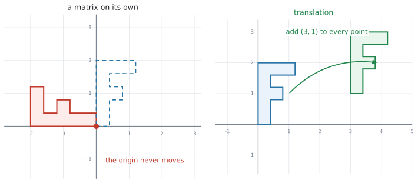
理由は 図 4 の左を見ると分かります。\(A\begin{pmatrix} 0 \\ 0 \end{pmatrix}\) は、\(A\) が何であっても \(\begin{pmatrix} 0 \\ 0 \end{pmatrix}\) です。原点は動きません。 平行移動は原点も動かすので、transformation matrix では表せないのです。
そこで、シラバスは次の形を使います。
\[ \begin{pmatrix} x' \\ y' \end{pmatrix} = \begin{pmatrix} a & b \\ c & d \end{pmatrix}\begin{pmatrix} x \\ y \end{pmatrix} + \begin{pmatrix} e \\ f \end{pmatrix} \tag{6}\]
\(\begin{pmatrix} e \\ f \end{pmatrix}\) が translation の分です。先に transformation matrix を掛けて、あとから足します。
似た言い方が \(2\) つ出てきます。
- transformation matrix（変換行列）… 式 6 の \(\begin{pmatrix} a & b \\ c & d \end{pmatrix}\) の部分。\(2 \times 2\) の行列そのものです。
- matrix transformation（行列による変換）… 式 6 全体、つまり translation まで含めた変換のしかたのこと。
\(\begin{pmatrix} e \\ f \end{pmatrix}\) は transformation matrix の中には入りません。シラバスが Matrix transformations of the form と書いて、この形を丸ごと示しているのは、そのためです。
たとえば「\(2\) 倍に拡大してから、\(x\) 方向に \(1\)、\(y\) 方向に \(-3\) 動かす」なら
\[ \begin{pmatrix} 2 & 0 \\ 0 & 2 \end{pmatrix}\begin{pmatrix} 3 \\ 1 \end{pmatrix} + \begin{pmatrix} 1 \\ -3 \end{pmatrix} = \begin{pmatrix} 6 \\ 2 \end{pmatrix} + \begin{pmatrix} 1 \\ -3 \end{pmatrix} = \begin{pmatrix} 7 \\ -1 \end{pmatrix} \]
です。
5. 合成は、あとにやるほうを左に書きます
\(2\) つの変換を続けて行うことを composition（合成）といいます。
変換 \(P\) をしてから変換 \(Q\) をするなら、点 \(\mathbf{x}\) の行き先は
\[ Q\bigl(P\mathbf{x}\bigr) = (QP)\,\mathbf{x} \tag{7}\]
です。\(1\) つの行列 \(QP\) にまとめられます。
ここで大事なのは順番です。先にやる \(P\) が右、あとにやる \(Q\) が左です。日本語の語順とは逆になります。
そして AHL 1.14 で見たとおり、\(QP\) と \(PQ\) はふつう違う行列です。つまり、順番を変えると結果も変わります。
図 5 は、\(P\) を「\(x\) 軸に関する reflection」、\(Q\) を「\(90^\circ\) anticlockwise rotation」としたものです。\(QP\) は \(y = x\) に関する reflection、\(PQ\) は \(y = -x\) に関する reflection になり、別の変換です。
\(QP\) と \(PQ\) のどちらだったか自信がないときは、わかりやすい点を \(1\) つ選んで、順番どおりに \(2\) 回変換してみてください。
\((1,\ 0)\) のような点なら計算が軽く、まとめた行列の \(1\) 列目と見くらべるだけで確かめられます。
6. determinant は「面積が何倍になるか」です
transformation matrix \(A\) で変換すると、図形の面積は \(\lvert \det A \rvert\) 倍になります。シラバスも Geometric interpretation of the determinant of a transformation matrix と書いています。
\[ \text{area of image} = \lvert \det A \rvert \times \text{area of object} \tag{8}\]
図 6 の三角形は面積 \(4\) で、\(\det\begin{pmatrix} 3 & 1 \\ 1 & 2 \end{pmatrix} = 6 - 1 = 5\) なので、像の面積は \(5 \times 4 = 20\) です。
なぜ絶対値が付くのか
\(\det A\) が負になることがあるからです。面積は負になりません。
\(\det A\) が負のときは、図形が裏返っています。 reflection の transformation matrix は、どれも \(\det = -1\) です。\(-1\) 倍というのは「面積はそのまま、向きだけ裏返る」という意味です。
| \(\det A\) | 面積 | 向き |
|---|---|---|
| \(\det A > 0\) | \(\lvert \det A \rvert\) 倍 | そのまま |
| \(\det A < 0\) | \(\lvert \det A \rvert\) 倍 | 裏返る |
| \(\det A = 0\) | \(0\)（つぶれる） | ― |
\(\det A = 0\) のときは、図形が線分か点につぶれてしまいます。このとき inverse matrix が存在しない（AHL 1.14）ことと、同じことを言っています。つぶれたものは、もとにもどせません。
7. 像からもどすときは、inverse matrix を使います
「どの点が \((12,\ 5)\) にうつったか」と聞かれることがあります。\(A\mathbf{x} = \mathbf{y}\) を \(\mathbf{x}\) について解けばよいので、両辺に \(A^{-1}\) を左から掛けて
\[ \mathbf{x} = A^{-1}\mathbf{y} \tag{9}\]
です。translation が付いている 式 6 の形なら、先に引いてから掛けます。
\[ \mathbf{x} = A^{-1}\bigl(\mathbf{y} - \mathbf{t}\bigr) \tag{10}\]
順番が逆になることに注意してください。行くときは「掛けてから足す」、もどるときは「引いてから掛ける」です。
8. fractal は、同じ変換をくり返して作ります
シラバスは、この項目の最後に fractal（フラクタル）を挙げています。難しそうな名前ですが、やっていることは縮小する変換を何度もくり返すだけです。
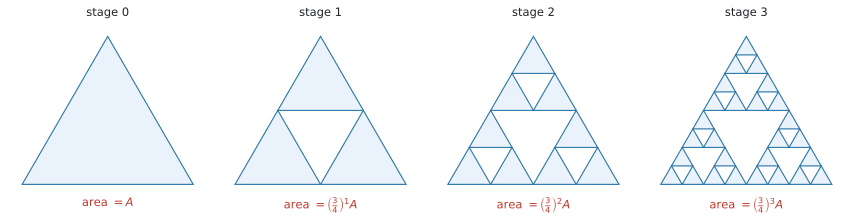
図 7 は Sierpinski triangle（シェルピンスキーの三角形）です。\(1\) 回の手順は、次の \(2\) つでできています。
- \(\begin{pmatrix} \frac{1}{2} & 0 \\ 0 & \frac{1}{2} \end{pmatrix}\) で半分に縮める（enlargement, \(k = \frac{1}{2}\)）
- その縮んだ図形を \(3\) つ、translation で置きなおす
面積で見ると、\(1\) つあたりが \(\left(\frac{1}{2}\right)^{2} = \frac{1}{4}\) になり、それが \(3\) つなので
\[ 3 \times \frac{1}{4} = \frac{3}{4} \]
つまり \(1\) 回ごとに面積が \(\frac{3}{4}\) 倍になります。これは公比 \(\frac{3}{4}\) の geometric sequence です（SL 1.3）。\(\lvert r \rvert < 1\) なので、\(n\) を大きくすると面積は \(0\) に近づきます。
同じ見方で、Koch snowflake（コッホ雪片）は周の長さを追いかけます。
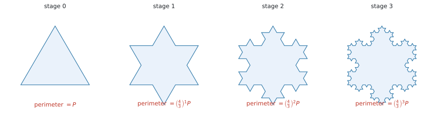
図 8 では、\(1\) 本の辺が \(\frac{1}{3}\) の長さの辺 \(4\) 本に置きかわります。周の長さは \(1\) 回ごとに \(\frac{4}{3}\) 倍で、こちらは \(\lvert r \rvert > 1\) ですから、いくらでも長くなります。 面積は有限のままなのに周の長さは無限、というのが、この図形が有名な理由です。
どこを拡大しても同じ形が出てくることを self-similar といいます。縮小した自分自身を並べるという作り方をしているので、こうなります。
試験でこの語が出たら、「縮小した自分自身のコピーでできている」という意味だと思ってください。
Why it works
ここで説明するのは、なぜ transformation matrix を掛けるだけで図形が動くのか、その \(1\) 点だけです。
\(2 \times 2\) の行列に \(\begin{pmatrix} 1 \\ 0 \end{pmatrix}\) を掛けると、答えは \(1\) 列目そのものになります。同じように \(\begin{pmatrix} 0 \\ 1 \end{pmatrix}\) を掛けると \(2\) 列目が出ます。
\[ \begin{pmatrix} 3 & 1 \\ 1 & 2 \end{pmatrix}\begin{pmatrix} 1 \\ 0 \end{pmatrix} = \begin{pmatrix} 3 \\ 1 \end{pmatrix} \qquad \begin{pmatrix} 3 & 1 \\ 1 & 2 \end{pmatrix}\begin{pmatrix} 0 \\ 1 \end{pmatrix} = \begin{pmatrix} 1 \\ 2 \end{pmatrix} \]
つまり、transformation matrix の \(2\) つの列は「横向きの \(1\) と縦向きの \(1\) が、どこへ行くか」を書いたものです。
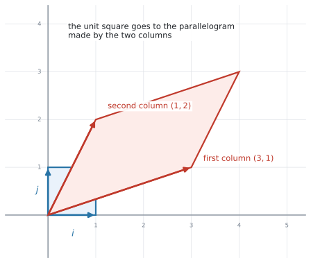
平面上のどの点も、横向きと縦向きの組み合わせで書けます。\((3,\ 1)\) は「横に \(3\)、縦に \(1\)」です。だから、この \(2\) つの行き先さえ決めれば、残りの点の行き先は自動的に決まります。 transformation matrix は、その \(2\) つの行き先を並べただけのものです。
図 9 で、\(1\) 辺 \(1\) の正方形が平行四辺形になっています。この平行四辺形の面積が \(\lvert \det A \rvert\) で、面積が何倍になるか（式 8）も、ここから来ています。
Worked examples
問題文は英語です。意味が理解できなかったら、問題文の下の「日本語訳」を開いてください。解説は日本語です。
例題 1 The transformation \(T\) is represented by the matrix \(M = \begin{pmatrix} 0 & -1 \\ 1 & 0 \end{pmatrix}\).
(a) Find the image of the point \(P(4,\ 2)\) under \(T\).
(b) Describe fully the transformation \(T\).
日本語訳
変換 \(T\) は行列 \(M = \begin{pmatrix} 0 & -1 \\ 1 & 0 \end{pmatrix}\) で表されます。
(a) \(T\) による点 \(P(4,\ 2)\) の像を求めなさい。
(b) 変換 \(T\) を、もれなく説明しなさい。
(a) 点を縦に並べて、左から \(M\) を掛けます。
\[ \begin{pmatrix} 0 & -1 \\ 1 & 0 \end{pmatrix}\begin{pmatrix} 4 \\ 2 \end{pmatrix} = \begin{pmatrix} 0(4) + (-1)(2) \\ 1(4) + 0(2) \end{pmatrix} = \begin{pmatrix} -2 \\ 4 \end{pmatrix} \]
答えは \((-2,\ 4)\) です。
(b) 第3節の表と見くらべます。左下が \(1\)、右上が \(-1\) なので、anticlockwise の rotation の形です。
\[ \begin{pmatrix} \cos\theta & -\sin\theta \\ \sin\theta & \cos\theta \end{pmatrix} = \begin{pmatrix} 0 & -1 \\ 1 & 0 \end{pmatrix} \quad \Rightarrow \quad \cos\theta = 0,\ \ \sin\theta = 1 \]
\(\theta = 90^\circ\) です。
Describe fully と言われたら、角・向き・中心の \(3\) つを書いてください。\(1\) つでも欠けると点になりません。
試験ではこう書く
A rotation of \(90^\circ\) anticlockwise about the origin.
（原点を中心とする \(90^\circ\) の反時計回りの回転、という意味です。）
(a) \[ \begin{pmatrix} 0 & -1 \\ 1 & 0 \end{pmatrix}\begin{pmatrix} 4 \\ 2 \end{pmatrix} = \begin{pmatrix} -2 \\ 4 \end{pmatrix} \quad \Rightarrow \quad (-2,\ 4) \]
(b) A rotation of \(90^\circ\) anticlockwise about the origin.
例題 2 The triangle \(OAB\) has vertices \(O(0,\ 0)\), \(A(4,\ 0)\) and \(B(0,\ 3)\). The transformation \(S\) is represented by the matrix \(N = \begin{pmatrix} 2 & 1 \\ 0 & 3 \end{pmatrix}\).
(a) Find the coordinates of \(A'\) and \(B'\), the images of \(A\) and \(B\) under \(S\).
(b) Find \(\det N\).
(c) Hence find the area of triangle \(OA'B'\).
日本語訳
三角形 \(OAB\) の頂点は \(O(0,\ 0)\)、\(A(4,\ 0)\)、\(B(0,\ 3)\) です。変換 \(S\) は行列 \(N = \begin{pmatrix} 2 & 1 \\ 0 & 3 \end{pmatrix}\) で表されます。
(a) \(S\) による \(A\) と \(B\) の像 \(A'\) と \(B'\) の座標を求めなさい。
(b) \(\det N\) を求めなさい。
(c) これを使って、三角形 \(OA'B'\) の面積を求めなさい。
(a) \(2\) 点をまとめて計算します。
\[ \begin{pmatrix} 2 & 1 \\ 0 & 3 \end{pmatrix}\begin{pmatrix} 4 & 0 \\ 0 & 3 \end{pmatrix} = \begin{pmatrix} 8 & 3 \\ 0 & 9 \end{pmatrix} \]
列がそのまま答えなので、\(A'(8,\ 0)\)、\(B'(3,\ 9)\) です。
(b) \(\det N = 2(3) - 1(0) = 6\) です。
(c) Hence と書かれているので、(b) の \(6\) を使えという指示です。面積を座標から計算しなおす必要はありません。
もとの三角形 \(OAB\) は、直角をはさむ辺が \(4\) と \(3\) なので
\[ \text{area of } OAB = \frac{1}{2}(4)(3) = 6 \]
式 8 より
\[ \text{area of } OA'B' = \lvert 6 \rvert \times 6 = 36 \]
検算。 \(A'(8,0)\)、\(B'(3,9)\) から直接計算すると \(\frac{1}{2}\lvert 8(9) - 0(3) \rvert = 36\) ✓
(a) \[ \begin{pmatrix} 2 & 1 \\ 0 & 3 \end{pmatrix}\begin{pmatrix} 4 & 0 \\ 0 & 3 \end{pmatrix} = \begin{pmatrix} 8 & 3 \\ 0 & 9 \end{pmatrix} \quad \Rightarrow \quad A'(8,\ 0),\ \ B'(3,\ 9) \]
(b) \(\det N = 2(3) - 1(0) = 6\)
(c) \[ \text{area of } OAB = \tfrac{1}{2}(4)(3) = 6 \] \[ \text{area of } OA'B' = \lvert 6 \rvert \times 6 = 36 \]
例題 3 \(P\) is a reflection in the \(x\)-axis. \(Q\) is a rotation of \(90^\circ\) anticlockwise about the origin.
(a) Write down the matrices \(P\) and \(Q\).
(b) Find the single matrix that represents a reflection in the \(x\)-axis followed by a rotation of \(90^\circ\) anticlockwise.
(c) Show that carrying out the two transformations in the other order gives a different result.
日本語訳
\(P\) は \(x\) 軸に関する対称移動、\(Q\) は原点を中心とする \(90^\circ\) の反時計回りの回転です。
(a) 行列 \(P\) と \(Q\) を書きなさい。
(b) 「\(x\) 軸に関する対称移動をしてから、\(90^\circ\) 反時計回りに回転する」を表す \(1\) つの行列を求めなさい。
(c) \(2\) つの変換を逆の順で行うと、結果が変わることを示しなさい。
(a) \(x\) 軸は \(y = 0\)、つまり傾き \(0\) の直線なので \(\theta = 0^\circ\) です。式 1 に \(2\theta = 0^\circ\) を入れます。
\[ P = \begin{pmatrix} \cos 0^\circ & \sin 0^\circ \\ \sin 0^\circ & -\cos 0^\circ \end{pmatrix} = \begin{pmatrix} 1 & 0 \\ 0 & -1 \end{pmatrix} \qquad Q = \begin{pmatrix} 0 & -1 \\ 1 & 0 \end{pmatrix} \]
(b) 「\(P\) をしてから \(Q\)」なので、あとにやる \(Q\) を左に書きます。
\[ QP = \begin{pmatrix} 0 & -1 \\ 1 & 0 \end{pmatrix}\begin{pmatrix} 1 & 0 \\ 0 & -1 \end{pmatrix} = \begin{pmatrix} 0 & 1 \\ 1 & 0 \end{pmatrix} \]
これは \(y = x\) に関する reflection です（表）。
(c) 逆の順は \(PQ\) です。
\[ PQ = \begin{pmatrix} 1 & 0 \\ 0 & -1 \end{pmatrix}\begin{pmatrix} 0 & -1 \\ 1 & 0 \end{pmatrix} = \begin{pmatrix} 0 & -1 \\ -1 & 0 \end{pmatrix} \]
\(QP \neq PQ\) なので、結果は変わります。\(PQ\) のほうは \(y = -x\) に関する reflection です。
Show that と言われているので、\(2\) つの行列を並べて、違うと一言書くところまでが解答です。
(a) \[ P = \begin{pmatrix} 1 & 0 \\ 0 & -1 \end{pmatrix}, \qquad Q = \begin{pmatrix} 0 & -1 \\ 1 & 0 \end{pmatrix} \]
(b) \[ QP = \begin{pmatrix} 0 & -1 \\ 1 & 0 \end{pmatrix}\begin{pmatrix} 1 & 0 \\ 0 & -1 \end{pmatrix} = \begin{pmatrix} 0 & 1 \\ 1 & 0 \end{pmatrix} \]
(c) \[ PQ = \begin{pmatrix} 1 & 0 \\ 0 & -1 \end{pmatrix}\begin{pmatrix} 0 & -1 \\ 1 & 0 \end{pmatrix} = \begin{pmatrix} 0 & -1 \\ -1 & 0 \end{pmatrix} \neq QP \]
The order changes the result: \(QP\) is a reflection in \(y = x\), but \(PQ\) is a reflection in \(y = -x\).
例題 4 A computer program moves each point \((x,\ y)\) of a design to the point \((x',\ y')\), where
\[ \begin{pmatrix} x' \\ y' \end{pmatrix} = \begin{pmatrix} 3 & 1 \\ 2 & 1 \end{pmatrix}\begin{pmatrix} x \\ y \end{pmatrix} + \begin{pmatrix} 4 \\ -1 \end{pmatrix} \]
(a) Find the image of the point \((2,\ 1)\).
(b) The design has an area of \(6\ \text{cm}^{2}\). Find the area of the image, and comment on your answer.
(c) Find the point whose image is \((12,\ 5)\).
日本語訳
あるコンピュータのプログラムは、デザインの各点 \((x,\ y)\) を、次の \((x',\ y')\) に移します。
\[ \begin{pmatrix} x' \\ y' \end{pmatrix} = \begin{pmatrix} 3 & 1 \\ 2 & 1 \end{pmatrix}\begin{pmatrix} x \\ y \end{pmatrix} + \begin{pmatrix} 4 \\ -1 \end{pmatrix} \]
(a) 点 \((2,\ 1)\) の像を求めなさい。
(b) このデザインの面積は \(6\ \text{cm}^{2}\) です。像の面積を求め、その答えについてコメントしなさい。
(c) 像が \((12,\ 5)\) になる点を求めなさい。
(a) 掛けてから足します。
\[ \begin{pmatrix} 3 & 1 \\ 2 & 1 \end{pmatrix}\begin{pmatrix} 2 \\ 1 \end{pmatrix} = \begin{pmatrix} 7 \\ 5 \end{pmatrix} \qquad \begin{pmatrix} 7 \\ 5 \end{pmatrix} + \begin{pmatrix} 4 \\ -1 \end{pmatrix} = \begin{pmatrix} 11 \\ 4 \end{pmatrix} \]
答えは \((11,\ 4)\) です。
(b) 面積を決めるのは transformation matrix のほうだけです。translation は図形を動かすだけで、大きさを変えません。
\[ \det \begin{pmatrix} 3 & 1 \\ 2 & 1 \end{pmatrix} = 3(1) - 1(2) = 1 \]
式 8 より、像の面積は \(\lvert 1 \rvert \times 6 = 6\ \text{cm}^{2}\) です。
comment on と言われているので、数値だけでは点になりません。
試験ではこう書く
Since \(\det = 1\), the area is unchanged. The design is moved and its shape is distorted, but it covers the same area of \(6\ \text{cm}^{2}\).
（\(\det = 1\) なので面積は変わりません。形はゆがみますが、覆う面積は同じ \(6\ \text{cm}^{2}\) です、という意味です。）
(c) 引いてから、inverse を掛けます。
\[ \begin{pmatrix} 12 \\ 5 \end{pmatrix} - \begin{pmatrix} 4 \\ -1 \end{pmatrix} = \begin{pmatrix} 8 \\ 6 \end{pmatrix} \]
\(\det = 1\) なので、inverse は割り算なしで書けます。
\[ A^{-1} = \frac{1}{1}\begin{pmatrix} 1 & -1 \\ -2 & 3 \end{pmatrix} = \begin{pmatrix} 1 & -1 \\ -2 & 3 \end{pmatrix} \]
\[ \begin{pmatrix} 1 & -1 \\ -2 & 3 \end{pmatrix}\begin{pmatrix} 8 \\ 6 \end{pmatrix} = \begin{pmatrix} 2 \\ 2 \end{pmatrix} \]
答えは \((2,\ 2)\) です。
検算。 \(\begin{pmatrix} 3 & 1 \\ 2 & 1 \end{pmatrix}\begin{pmatrix} 2 \\ 2 \end{pmatrix} + \begin{pmatrix} 4 \\ -1 \end{pmatrix} = \begin{pmatrix} 8 \\ 6 \end{pmatrix} + \begin{pmatrix} 4 \\ -1 \end{pmatrix} = \begin{pmatrix} 12 \\ 5 \end{pmatrix}\) ✓
(a) \[ \begin{pmatrix} 3 & 1 \\ 2 & 1 \end{pmatrix}\begin{pmatrix} 2 \\ 1 \end{pmatrix} + \begin{pmatrix} 4 \\ -1 \end{pmatrix} = \begin{pmatrix} 11 \\ 4 \end{pmatrix} \quad \Rightarrow \quad (11,\ 4) \]
(b) \[ \det A = 3(1) - 1(2) = 1, \qquad \text{area} = \lvert 1 \rvert \times 6 = 6\ \text{cm}^{2} \]
Since \(\det = 1\), the area is unchanged.
(c) \[ A^{-1} = \begin{pmatrix} 1 & -1 \\ -2 & 3 \end{pmatrix}, \qquad \begin{pmatrix} 1 & -1 \\ -2 & 3 \end{pmatrix}\left[\begin{pmatrix} 12 \\ 5 \end{pmatrix} - \begin{pmatrix} 4 \\ -1 \end{pmatrix}\right] = \begin{pmatrix} 2 \\ 2 \end{pmatrix} \]
\(\Rightarrow (2,\ 2)\)
例題 5 A fractal is built from a triangle of area \(64\ \text{cm}^{2}\). At each stage, every triangle is replaced by three triangles, each produced by the transformation matrix \(\begin{pmatrix} 0.5 & 0 \\ 0 & 0.5 \end{pmatrix}\) together with a translation.
(a) Describe the transformation represented by the matrix.
(b) Show that the total area is multiplied by \(\dfrac{3}{4}\) at each stage.
(c) Find the total area at stage \(5\), giving your answer to three significant figures.
(d) State what happens to the total area as the number of stages increases.
日本語訳
面積 \(64\ \text{cm}^{2}\) の三角形からフラクタルを作ります。各段階で、すべての三角形が \(3\) つの三角形に置きかわります。それぞれは、transformation matrix \(\begin{pmatrix} 0.5 & 0 \\ 0 & 0.5 \end{pmatrix}\) と平行移動によって作られます。
(a) この行列が表す変換を説明しなさい。
(b) 各段階で全体の面積が \(\dfrac{3}{4}\) 倍になることを示しなさい。
(c) 段階 \(5\) での全体の面積を、有効数字 \(3\) 桁で求めなさい。
(d) 段階の数を増やしていくと、全体の面積がどうなるかを述べなさい。
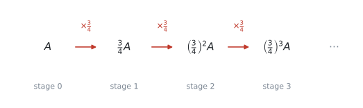
(a) 対角線に同じ数が並んでいるので enlargement です。
試験ではこう書く
An enlargement with scale factor \(0.5\), centre the origin.
（原点を中心とする scale factor \(0.5\) の拡大、という意味です。scale factor が \(1\) より小さいので、実際には縮みます。）
(b) 面積の倍率は \(\lvert \det \rvert\) です（式 8）。
\[ \det \begin{pmatrix} 0.5 & 0 \\ 0 & 0.5 \end{pmatrix} = 0.25 \]
三角形 \(1\) つあたりの面積は \(0.25\) 倍になり、それが \(3\) つできるので
\[ 3 \times 0.25 = 0.75 = \frac{3}{4} \]
(c) \(1\) 段階ごとに \(\frac{3}{4}\) 倍なので、これは公比 \(\frac{3}{4}\) の geometric sequence です。
\[ 64 \times \left(\frac{3}{4}\right)^{5} = 15.1875 \]
有効数字 \(3\) 桁で \(15.2\ \text{cm}^{2}\) です。
(d) \(\left\lvert \frac{3}{4} \right\rvert < 1\) なので、段階を進めるほど面積は小さくなります。
試験ではこう書く
The total area tends to \(0\) as the number of stages increases.
（段階の数が増えると、全体の面積は \(0\) に近づきます、という意味です。）
(a) An enlargement with scale factor \(0.5\), centre the origin.
(b) \[ \det = 0.5 \times 0.5 = 0.25, \qquad 3 \times 0.25 = 0.75 = \tfrac{3}{4} \]
(c) \[ 64 \times \left(\tfrac{3}{4}\right)^{5} = 15.1875 = 15.2\ \text{cm}^{2} \ (3\ \text{s.f.}) \]
(d) The total area tends to \(0\).
Common errors
\(\begin{pmatrix} 4 & 2 \end{pmatrix}\begin{pmatrix} 0 & -1 \\ 1 & 0 \end{pmatrix}\) と書いてしまう誤りです。
この形でも計算はできてしまうので、間違いに気づけないのが怖いところです。例 1 と同じ数で試すと
\[ \begin{pmatrix} 4 & 2 \end{pmatrix}\begin{pmatrix} 0 & -1 \\ 1 & 0 \end{pmatrix} = \begin{pmatrix} 2 & -4 \end{pmatrix} \]
となり、正しい答え \((-2,\ 4)\) ではなく \((2,\ -4)\)、つまり時計回りに回した点が出ます。もっともらしい答えなので、そのまま書いてしまいます。
この項目では、点は必ず縦に書いて、transformation matrix を左に置いてください（第1節）。
\(y = x\) の reflection で、\(\theta = 45^\circ\) を 式 1 にそのまま入れてしまう誤りです。
入るのは \(2\theta\) です。\(45^\circ\) を入れると \(\begin{pmatrix} 0.707 & 0.707 \\ 0.707 & -0.707 \end{pmatrix}\) という、意味の分からない行列になります。
公式集の中に \(2\theta\) と印刷されているので、書き写すときに落とさないでください。
「\(P\) をしてから \(Q\)」を \(PQ\) と書いてしまう誤りです。正しくは \(QP\) です（第5節）。
日本語では「\(P\) してから \(Q\)」と左から読むので、そのまま書きたくなります。あとにやるほうが左、と声に出して確かめてください。
clockwise なのに anticlockwise の行列を使ってしまう誤りです。
\(\theta = 90^\circ\) なら、\((1,\ 0)\) が \((0,\ 1)\) に行くのが anticlockwise、\((0,\ -1)\) に行くのが clockwise です。\((1,\ 0)\) を \(1\) 点だけ入れて確かめてください。 行列の \(1\) 列目を見るだけで済みます。
\(A\mathbf{x} + \mathbf{t}\) の形で、\(\mathbf{t}\) が面積に影響すると考えてしまう誤りです。
平行移動は、図形をそのまま滑らせるだけです。面積を決めるのは \(A\) の determinant だけです。
\(A^{-1}\mathbf{y} - \mathbf{t}\) と書いてしまう誤りです。正しくは \(A^{-1}(\mathbf{y} - \mathbf{t})\) です（式 10）。
行くときは「掛ける → 足す」でした。もどるときは、逆の順で「引く → 掛ける」になります。
\(\cos 90^\circ\) を計算したつもりが \(\cos 90\ \text{rad}\) になり、\(0\) ではなく \(-0.448\ldots\) が出ます。
行列の成分が全部おかしくなるので、答えは大きく外れます。Topic 3 では Degree、と決めておいてください。
Describe に対して、行列を書き写して終わる
Describe fully the transformation は、言葉で説明しなさいという指示です。行列をもう一度書いても点になりません。
rotation なら「角・向き・中心」、enlargement なら「scale factor・中心」、reflection なら「どの直線か」まで書いてください。
Sierpinski triangle で、\(1\) つの三角形が \(\frac{1}{4}\) になることと、全体が \(\frac{3}{4}\) になることを取りちがえる誤りです。
\(\frac{1}{4}\) が \(3\) つで \(\frac{3}{4}\) です。問題文が「\(1\) つの面積」と「全体の面積」のどちらを聞いているのか、先に確かめてください。
Using your GDC (TI-Nspire CX II)
行列の入力そのものは AHL 1.14 の GDC の節と同じです。ここでは、この項目でよく使う \(5\) つを書きます。
1. 角の設定を先に確かめます
rotation と reflection を計算する前に、必ず Degree になっているか見てください。
ctrl + menu → Settings → Document Settings → Angle: Degree画面の右上に DEG と出ていれば大丈夫です。
2. transformation matrix を作って、名前を付けます
Calculator ページで、AHL 1.14 と同じメニューから \(2 \times 2\) の枠を出します。
menu → 7: Matrix & Vector → 1: Create → 1: Matrix枠に \(\cos 90\)、\(-\sin 90\)、\(\sin 90\)、\(\cos 90\) を打ちこんだら、名前を付けて保存します。
ctrl + sto→に続けて r と打てば、以後は r と書くだけでこの行列が呼び出せます。
\(\cos 90^\circ\) を自分で \(0\) に直してから打ちこむ必要はありません。式のまま入れれば、電卓が計算します。
\(\theta = \tan^{-1} 2\) のような割り切れない角のときは、そのほうが丸めの誤差が入りません。
3. 点や図形を、まとめて変換します
頂点を並べた \(2 \times 3\) の行列を、同じメニューから作ります。こちらにも ctrl + sto→ で名前を付けます。ここでは b としました。
あとは、左から掛けるだけです。
r * b答えの列がそれぞれの頂点の像です（第2節）。
b * r と打つと、Invalid dimensions と出ます
\(2 \times 3\) に \(2 \times 2\) は掛けられないので、電卓が計算を受け付けません。
transformation matrix は、いつも左です。
4. determinant と逆変換
面積の倍率は det() で出せます。
det(r)像からもとの点にもどすときは、逆行列を掛けます。
r^(-1) * [[12][5]]AHL 1.14 と同じで、^ キーで \(-1\) 乗を打つだけです。translation があるときは、先に引き算をしてから掛けてください。
r^(-1) * ([[12][5]] - [[4][-1]])5. 同じ変換をくり返すとき
fractal のように同じ変換を \(n\) 回くり返すときは、行列の累乗が使えます。
r^5ただし、面積の話だけなら行列を \(5\) 乗する必要はありません。 \(\lvert \det \rvert\) を \(5\) 乗するほうが速いです。
Exercises
各問題に、折りたたみが3つ付いています。日本語訳、解答例（答案用紙に書くべきこと。英語です）、解説（なぜそうなるか。日本語です）。
まず自分で解いて、次に解答例と見くらべてください。解説は、合わなかったときだけ開けば十分です。
1 The transformation \(R\) is a rotation of \(180^\circ\) about the origin. Find the image of the point \((5,\ -2)\) under \(R\).
日本語訳
変換 \(R\) は、原点を中心とする \(180^\circ\) の回転です。\(R\) による点 \((5,\ -2)\) の像を求めなさい。
\[ R = \begin{pmatrix} \cos 180^\circ & -\sin 180^\circ \\ \sin 180^\circ & \cos 180^\circ \end{pmatrix} = \begin{pmatrix} -1 & 0 \\ 0 & -1 \end{pmatrix} \]
\[ \begin{pmatrix} -1 & 0 \\ 0 & -1 \end{pmatrix}\begin{pmatrix} 5 \\ -2 \end{pmatrix} = \begin{pmatrix} -5 \\ 2 \end{pmatrix} \quad \Rightarrow \quad (-5,\ 2) \]
\(180^\circ\) の回転は、時計回りでも反時計回りでも同じ場所に行きます。ですから、式 5 のどちらを使っても構いません。
出てくる行列は \(\begin{pmatrix} -1 & 0 \\ 0 & -1 \end{pmatrix}\)、つまり符号を両方変えるだけです。\((5,\ -2) \to (-5,\ 2)\) となります。
2 Write down the matrix that represents a reflection in the \(y\)-axis, and find the image of the point \((3,\ 7)\).
日本語訳
\(y\) 軸に関する対称移動を表す行列を書き、点 \((3,\ 7)\) の像を求めなさい。
\(y\)-axis \(\Rightarrow \theta = 90^\circ\), so \(2\theta = 180^\circ\).
\[ \begin{pmatrix} \cos 180^\circ & \sin 180^\circ \\ \sin 180^\circ & -\cos 180^\circ \end{pmatrix} = \begin{pmatrix} -1 & 0 \\ 0 & 1 \end{pmatrix} \]
\[ \begin{pmatrix} -1 & 0 \\ 0 & 1 \end{pmatrix}\begin{pmatrix} 3 \\ 7 \end{pmatrix} = \begin{pmatrix} -3 \\ 7 \end{pmatrix} \quad \Rightarrow \quad (-3,\ 7) \]
3 A shape is transformed by an enlargement with scale factor \(3\), centre the origin.
(a) Find the image of the point \((2,\ -1)\).
(b) The shape has an area of \(7\ \text{cm}^{2}\). Find the area of the image.
日本語訳
ある図形を、原点を中心とする scale factor \(3\) の拡大で変換します。
(a) 点 \((2,\ -1)\) の像を求めなさい。
(b) この図形の面積は \(7\ \text{cm}^{2}\) です。像の面積を求めなさい。
(a) \[ \begin{pmatrix} 3 & 0 \\ 0 & 3 \end{pmatrix}\begin{pmatrix} 2 \\ -1 \end{pmatrix} = \begin{pmatrix} 6 \\ -3 \end{pmatrix} \quad \Rightarrow \quad (6,\ -3) \]
(b) \[ \det = 3(3) - 0(0) = 9, \qquad \text{area} = 9 \times 7 = 63\ \text{cm}^{2} \]
(b) で「\(3\) 倍だから面積も \(3\) 倍」としないでください。
長さが \(3\) 倍になると、面積は \(3^{2} = 9\) 倍です。式 8 の \(\det\) を計算すれば、自動的に \(9\) が出てきます。公式に任せるほうが安全です。
4 \(S\) is a stretch parallel to the \(x\)-axis with scale factor \(2\). \(R\) is a rotation of \(90^\circ\) anticlockwise about the origin.
(a) Find the single matrix representing \(S\) followed by \(R\).
(b) Hence find the image of the point \((3,\ 2)\).
日本語訳
\(S\) は \(x\) 軸に平行な scale factor \(2\) の伸長、\(R\) は原点を中心とする \(90^\circ\) の反時計回りの回転です。
(a) 「\(S\) のあとに \(R\)」を表す \(1\) つの行列を求めなさい。
(b) これを使って、点 \((3,\ 2)\) の像を求めなさい。
(a) \[ S = \begin{pmatrix} 2 & 0 \\ 0 & 1 \end{pmatrix}, \qquad R = \begin{pmatrix} 0 & -1 \\ 1 & 0 \end{pmatrix} \]
\[ RS = \begin{pmatrix} 0 & -1 \\ 1 & 0 \end{pmatrix}\begin{pmatrix} 2 & 0 \\ 0 & 1 \end{pmatrix} = \begin{pmatrix} 0 & -1 \\ 2 & 0 \end{pmatrix} \]
(b) \[ \begin{pmatrix} 0 & -1 \\ 2 & 0 \end{pmatrix}\begin{pmatrix} 3 \\ 2 \end{pmatrix} = \begin{pmatrix} -2 \\ 6 \end{pmatrix} \quad \Rightarrow \quad (-2,\ 6) \]
(a) 「\(S\) のあとに \(R\)」なので、あとにやる \(R\) が左です（第5節）。\(SR\) と書くと \(\begin{pmatrix} 0 & -2 \\ 1 & 0 \end{pmatrix}\) になり、別の変換になってしまいます。
(b) Hence は「(a) の行列を使え」という指示です。\(S\) と \(R\) を \(2\) 回に分けて掛けても同じ答えになりますが、まとめた行列を使ったことが分かるように書いてください。
5 The triangle \(OAB\) has vertices \(O(0,\ 0)\), \(A(3,\ 0)\) and \(B(0,\ 2)\). It is transformed by the matrix \(M = \begin{pmatrix} 4 & 2 \\ 1 & 3 \end{pmatrix}\).
(a) Find the coordinates of \(A'\) and \(B'\).
(b) Find the area of triangle \(OA'B'\).
日本語訳
三角形 \(OAB\) の頂点は \(O(0,\ 0)\)、\(A(3,\ 0)\)、\(B(0,\ 2)\) です。これを行列 \(M = \begin{pmatrix} 4 & 2 \\ 1 & 3 \end{pmatrix}\) で変換します。
(a) \(A'\) と \(B'\) の座標を求めなさい。
(b) 三角形 \(OA'B'\) の面積を求めなさい。
(a) \[ \begin{pmatrix} 4 & 2 \\ 1 & 3 \end{pmatrix}\begin{pmatrix} 3 & 0 \\ 0 & 2 \end{pmatrix} = \begin{pmatrix} 12 & 4 \\ 3 & 6 \end{pmatrix} \quad \Rightarrow \quad A'(12,\ 3),\ \ B'(4,\ 6) \]
(b) \[ \text{area of } OAB = \tfrac{1}{2}(3)(2) = 3 \] \[ \det M = 4(3) - 2(1) = 10 \] \[ \text{area of } OA'B' = \lvert 10 \rvert \times 3 = 30 \]
(a) \(A\) と \(B\) を並べて \(2 \times 2\) にすると、かけ算 \(1\) 回で終わります。\(O\) は原点なので、transformation matrix を掛けても \(O\) のままです（第2節）。
(b) 像の座標から直接計算しても \(30\) になりますが、\(\det\) を使うほうが速くて確実です。
もとの三角形は直角三角形なので、面積は \(\frac{1}{2} \times 3 \times 2 = 3\) です。
6 A transformation is given by
\[ \begin{pmatrix} x' \\ y' \end{pmatrix} = \begin{pmatrix} 1 & 0 \\ 0 & -1 \end{pmatrix}\begin{pmatrix} x \\ y \end{pmatrix} + \begin{pmatrix} 0 \\ 6 \end{pmatrix} \]
(a) Find the images of the points \((2,\ 1)\) and \((5,\ -3)\).
(b) Describe the transformation represented by the matrix.
日本語訳
ある変換が、次の式で与えられています。
\[ \begin{pmatrix} x' \\ y' \end{pmatrix} = \begin{pmatrix} 1 & 0 \\ 0 & -1 \end{pmatrix}\begin{pmatrix} x \\ y \end{pmatrix} + \begin{pmatrix} 0 \\ 6 \end{pmatrix} \]
(a) 点 \((2,\ 1)\) と \((5,\ -3)\) の像を求めなさい。
(b) 行列が表す変換を説明しなさい。
(a) \[ \begin{pmatrix} 1 & 0 \\ 0 & -1 \end{pmatrix}\begin{pmatrix} 2 \\ 1 \end{pmatrix} + \begin{pmatrix} 0 \\ 6 \end{pmatrix} = \begin{pmatrix} 2 \\ 5 \end{pmatrix} \quad \Rightarrow \quad (2,\ 5) \] \[ \begin{pmatrix} 1 & 0 \\ 0 & -1 \end{pmatrix}\begin{pmatrix} 5 \\ -3 \end{pmatrix} + \begin{pmatrix} 0 \\ 6 \end{pmatrix} = \begin{pmatrix} 5 \\ 9 \end{pmatrix} \quad \Rightarrow \quad (5,\ 9) \]
(b) A reflection in the \(x\)-axis.
7 Describe fully the transformation represented by the matrix \(\begin{pmatrix} 0 & 1 \\ 1 & 0 \end{pmatrix}\), and state the value of its determinant.
日本語訳
行列 \(\begin{pmatrix} 0 & 1 \\ 1 & 0 \end{pmatrix}\) が表す変換をもれなく説明し、その determinant の値を書きなさい。
A reflection in the line \(y = x\).
\[ \det = 0(0) - 1(1) = -1 \]
\(\begin{pmatrix} \cos 2\theta & \sin 2\theta \\ \sin 2\theta & -\cos 2\theta \end{pmatrix}\) と見くらべると、\(\cos 2\theta = 0\)、\(\sin 2\theta = 1\) なので \(2\theta = 90^\circ\)、\(\theta = 45^\circ\) です。\(\tan 45^\circ = 1\) なので、鏡になる直線は \(y = x\) です。
\(\det = -1\) は、reflection ならいつもそうなります。面積は変わらず、向きだけ裏返るからです（第6節）。
8 The matrix \(M = \begin{pmatrix} 2 & 3 \\ 1 & 2 \end{pmatrix}\) maps a point \(P\) to the point \((8,\ 5)\). Find the coordinates of \(P\).
日本語訳
行列 \(M = \begin{pmatrix} 2 & 3 \\ 1 & 2 \end{pmatrix}\) は、点 \(P\) を点 \((8,\ 5)\) にうつします。\(P\) の座標を求めなさい。
\[ \det M = 2(2) - 3(1) = 1, \qquad M^{-1} = \begin{pmatrix} 2 & -3 \\ -1 & 2 \end{pmatrix} \]
\[ \begin{pmatrix} 2 & -3 \\ -1 & 2 \end{pmatrix}\begin{pmatrix} 8 \\ 5 \end{pmatrix} = \begin{pmatrix} 1 \\ 2 \end{pmatrix} \quad \Rightarrow \quad P(1,\ 2) \]
9 The point \((5,\ 0)\) is rotated \(60^\circ\) anticlockwise about the origin. Find the coordinates of the image, giving each coordinate to three significant figures.
日本語訳
点 \((5,\ 0)\) を、原点を中心に \(60^\circ\) 反時計回りに回転させます。像の座標を、それぞれ有効数字 \(3\) 桁で求めなさい。
\[ \begin{pmatrix} \cos 60^\circ & -\sin 60^\circ \\ \sin 60^\circ & \cos 60^\circ \end{pmatrix}\begin{pmatrix} 5 \\ 0 \end{pmatrix} = \begin{pmatrix} 2.5 \\ 4.330\ldots \end{pmatrix} \]
\(\Rightarrow (2.50,\ 4.33)\)
10 The Koch snowflake starts from an equilateral triangle of perimeter \(27\ \text{cm}\). At each stage, every straight edge is replaced by four edges, each one third of the length of the edge it replaces.
(a) Find the perimeter after one stage.
(b) Find the perimeter after four stages, giving your answer to three significant figures.
(c) State what happens to the perimeter as the number of stages increases, and justify your answer.
日本語訳
コッホ雪片は、周の長さ \(27\ \text{cm}\) の正三角形から始まります。各段階で、すべての直線の辺が \(4\) 本の辺に置きかわります。それぞれの長さは、もとの辺の \(\dfrac{1}{3}\) です。
(a) \(1\) 段階後の周の長さを求めなさい。
(b) \(4\) 段階後の周の長さを、有効数字 \(3\) 桁で求めなさい。
(c) 段階の数が増えると周の長さがどうなるかを述べ、その理由を書きなさい。
(a) \[ 27 \times \frac{4}{3} = 36\ \text{cm} \]
(b) \[ 27 \times \left(\frac{4}{3}\right)^{4} = 85.33\ldots = 85.3\ \text{cm} \ (3\ \text{s.f.}) \]
(c) The perimeter increases without limit. The common ratio is \(\frac{4}{3} > 1\), so the geometric sequence diverges.
(a) \(1\) 本の辺が、長さ \(\frac{1}{3}\) の辺 \(4\) 本になるので、長さは \(4 \times \frac{1}{3} = \frac{4}{3}\) 倍です。\(27 \times \frac{4}{3} = 36\) です。
(b) \(1\) 段階ごとに \(\frac{4}{3}\) 倍なので、公比 \(\frac{4}{3}\) の geometric sequence です（SL 1.3）。\(4\) 段階なら \(\left(\frac{4}{3}\right)^{4}\) を掛けます。
(c) justify と言われているので、理由を書かないと点になりません。 「公比が \(1\) より大きいから」が理由です。
例 5 の Sierpinski triangle は \(\frac{3}{4} < 1\) で \(0\) に近づきました。同じ考え方で、\(1\) より大きいか小さいかを見るだけです。